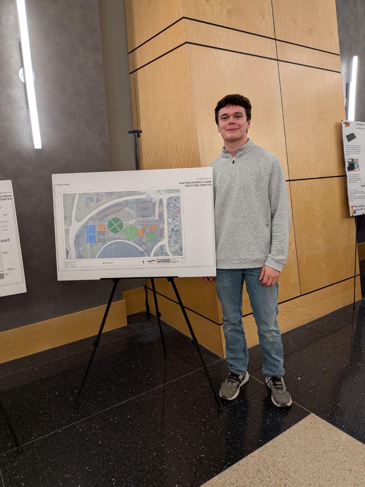
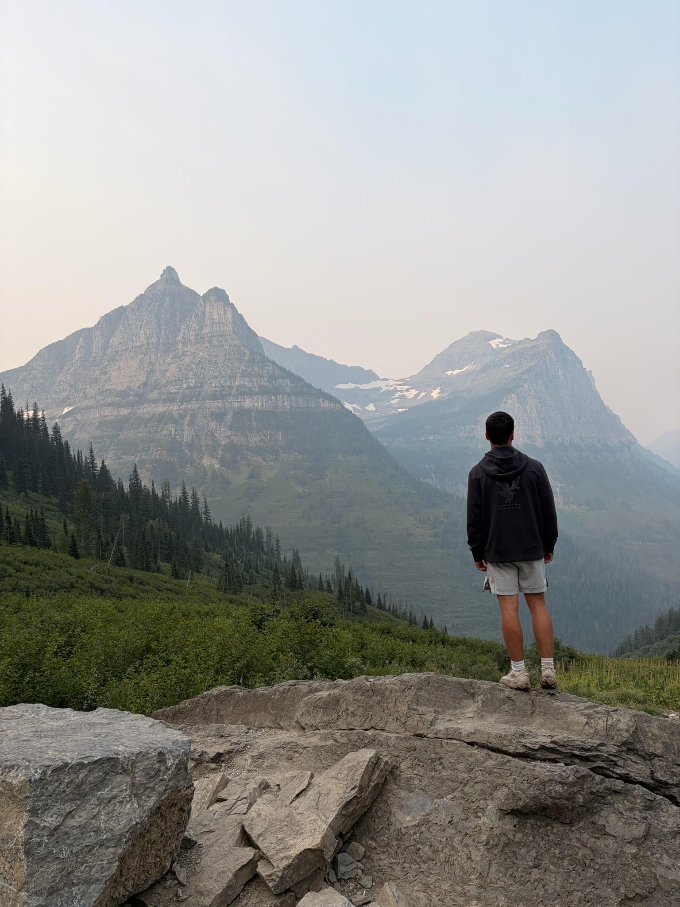

About
From CAD classes to mechanical engineering
My interest in engineering started with Computer-Aided Design (CAD). I took many CAD classes in high school and went on to complete two years of college-level CAD coursework at DMACC in Ankeny. I'm now on track to earn a CAD Technology diploma alongside my mechanical engineering degree.
Through that coursework, I realized I wanted to design my own ideas, not just model existing ones. That led me to mechanical engineering. I'm currently studying at DMACC and plan to transfer to Iowa State. My goal is to become a mechanical design engineer and design parts that don't exist yet.
I also founded Will Julander Designs, a small business that designs and 3D prints custom products. Its work includes the pins Mercy Hospital uses to honor its nurses. I'm SolidWorks (CSWA) certified and also work in Autodesk Inventor, Fusion 360, and AutoCAD.
I'm always looking to take on new engineering and design work. If you think I'd be a good fit for a project or internship, I would love to chat. You can reach me on the Contact page.

Off hours
Outside of school, I try to spend as much time outdoors as possible. Winter and summer are my favorite seasons for different reasons.
In the winter, I ski and snowboard whenever I can. In the summer, I enjoy hiking and biking, and I often go camping and fishing.
I also play disc golf and pickleball with friends and spend time boating on the Mississippi River with my family.

Software
SolidWorks (CSWA certified) · AutoCAD · Inventor · Fusion 360